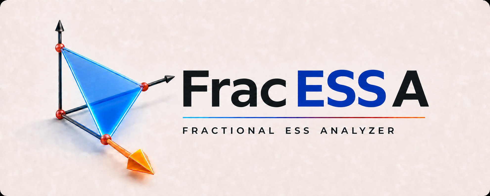

01
Safe
Uses exact rational arithmetic for every candidate decision. Choose this when mathematical completeness is required.
fracessa safe "3#-1,0,0,-2,0,-3"
Fractional ESS Analyzer
FracESSA finds evolutionarily stable strategies in symmetric partnership games and strict local maximizers of rational standard quadratic optimization problems.

Rational input. Exact output. Up to 63 strategies.
Standard quadratic optimization
What it computes
A game with n strategies has 2n-1 nonempty supports. FracESSA searches those supports, solves each candidate system, prunes supersets of exact equilibria, and checks stability through the reduced Hessian matrix.
Circular-symmetric matrices receive a specialized symmetry reduction: equivalent rotations and reflections are represented once, then restored through exact multiplicities. This is especially valuable for games with many equivalent ESS.
Uses exact rational arithmetic for every candidate decision. Choose this when mathematical completeness is required.
fracessa safe "3#-1,0,0,-2,0,-3"
Uses floating-point filtering before exact checks. Dangerous whole-matrix conditions trigger an automatic exact fallback.
fracessa fast "3#-1,0,0,-2,0,-3"
Get started
Self-contained CLI binaries are published for Linux, macOS, and Windows. Python 3.11-3.14 wheels are available from PyPI.
# Python API
python -m pip install pyfracessa
# Build from source
git clone https://github.com/reinhardullrich/fracessa.git
cmake -S fracessa/cpp -B fracessa/cpp/build \
-DCMAKE_BUILD_TYPE=Release
cmake --build fracessa/cpp/build --parallel